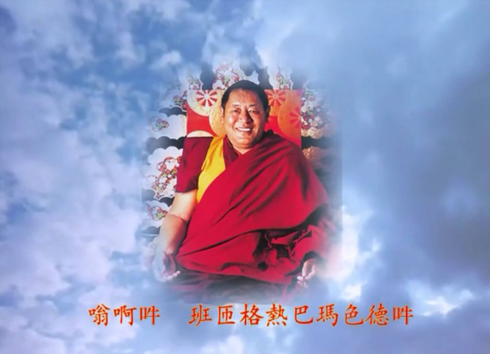
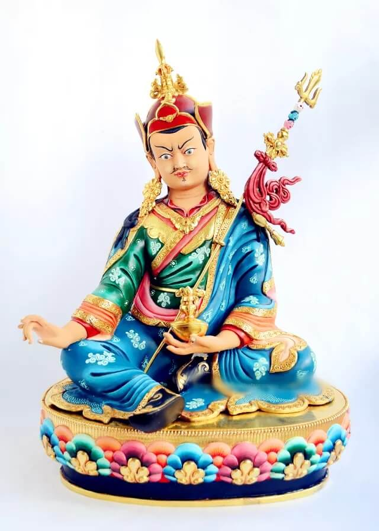
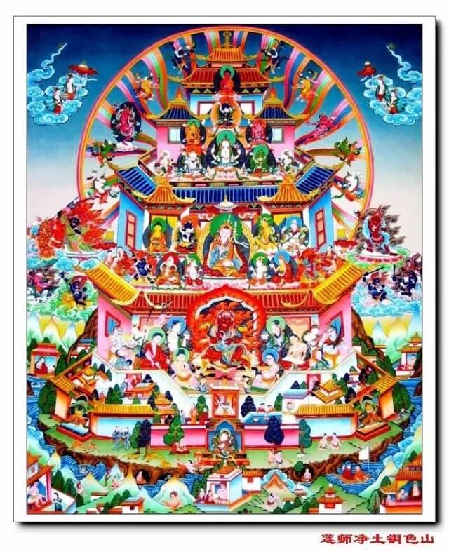

温馨提示：佛学入门系列课程由佛法人生弘法平台根据历代祖师大德、当代法师的开示整理而成，为了避免在阅读时产生一些困惑、误解甚至怀疑和诽谤，强烈建议您从第一课开始按顺序学习。最后，愿大家都能成为一个正见的佛教徒，早证菩提。
一、莲师简介
莲花生大士，佛教史上最伟大的大成就者之一。印度乌仗那国人，建立藏传佛教前弘期传承的重要人物，藏传佛教宁玛派祖师，无上密乘大圆满教法的传承祖师。莲花生大士是三世诸佛的总集化现，为利益世间众生而降临娑婆世界。莲花生大士集智慧、慈悲和伏恶的力量于一身，拥有无边的法力，祈祷莲师有不可思议的功德。在末法时代，祈祷莲师非常重要，不管是为了自己修行顺利成就，还是为了利益众生圆满成功，一切重大的事业均离不开莲师的加持。
二、佛经授记
《涅盘经》：我已灭度后，汝等莫忧伤，无垢彩湖中，较我胜士夫。
《诸佛未来授记经》：我已灭度后，一百十二年，较我甚殊胜，名为莲花生。
《无垢称天女经》：十方三世一切佛，事业归为一体相，殊胜稀有之佛子，生于邬金西北隅。
《秘密不可思议经》：贤劫三世佛，奇妙幻化身，稀有莲蕊中，现为持明者。
由此可见，莲师与佛陀无二无别，他是过去、现在、未来三世诸佛的总集和化现，他即生成就了不灭虹化身，亲身示现不生不灭之真谛。

三、莲师出生
从前，在印度有一个名叫乌金的小国，有位富有而慈悲的国王名叫印第菩提，他为了子民的福祉，不但将自己的财富，甚至自己的双目都慷慨地布施。当他的独子不幸去世后，他感到十分悲痛。而祸不单行，国家又遭逢连年旱灾和饥荒，其时国库空虚，人民只有吃那些未成熟的稻析花卉为生。国王除了倾囊布施外，更向神圣的佛陀祷告。
观音菩萨在极乐世界看见此种情景，便恳请阿弥陀佛救度此等众生。阿弥陀佛的舌头立时射出一道红光往丹那湖中的一莲花，莲花立时绽开，从弥陀心中再射出一直立金刚杵内有一个施字，立于莲花上，在彩虹光芒中化为一个八岁小童端坐于莲花上，四周绕着空行母。菩提国王经过丹那湖时，看见一道五色彩虹高悬天际，更见一巨莲上端坐着一个散发金光的小孩，他还以为自己在做梦，便问那小孩究竟是何人，来自何处。
小孩答道：我无父无母，是阿弥陀佛和观音菩萨的化身，我的使命是来普渡众生、弘扬金刚乘教义的。
国王听后，视力完全恢复，他很高兴地封他为“太子”及王位继承人，取名为莲花生。此后，乌金国风调雨顺，国泰民安。
四、莲师法教
莲师的教法是法界至高无上的教法，九乘佛法之巅的无上大圆满法，还有不经修行直接成佛的中阴听闻自解脱教法和迁识刹那往生破瓦法（需要大圆满前行的基础）。
不管是什么人，若能终生修持莲师，命终时定会融入莲师心间，这也是莲师的金刚语。由于莲师与阿弥陀佛无二无别，修莲师与修阿弥陀佛没什么差别，因此，遇到这么好的法门，我们一定要修，不修的话很可惜。
《上师密修要文》中云：“修法生次第，明了观修时，我住彼者前，曼扎供品物，食子摆设时，我无疑降临”。我们观修、祈祷莲师，莲师就会住于我们面前；我们在莲师像前摆放曼扎、食子等供品，诚心诚意地祈祷，莲师一定会降临。
又云：“无肉光明身，观修莲师身，彼时起佛慢”。莲花生大士不是肉身，而是光明身，所以若观修莲师的身体，定会时时得到加持，对此我们要生起佛慢。
又云：“我不自主临，邬金莲花我，谁以强敬信，猛厉祈祷时，我临彼者前”。莲师说：“谁以强烈信心祈祷我，我一定会降临在他面前”。
莲师曾说：“修我成就一切佛，见我现见一切佛，我是善逝之总集”。如果能修成莲师的上师瑜伽，不必对一尊一尊佛单独修，便可成就一切佛。倘若能亲眼见到莲师，也就见到了一切圣尊。为什么呢？因为莲师是所有善逝的总集。
五、莲师事业
莲师的事业无边，尽法界际。昔日，他在过去诸佛时曾现身于世，而今佛陀的这一圣教中，印度等地的大多数智者、成就者，也都是莲师的幻变。
又云：“乃至虚空之边际，有情边际亦如是，乃至业与烦恼际，我之事业如是疾”。虚空无有边际，有情也无有边际，有情的业和烦恼亦复无有边际，在如是无边无际的时空中，莲师摄受、利益众生的加持和事业会越来越迅猛。前面也讲过，诸佛菩萨的事业有正法和末法时期，随着世界越来越恶浊、越来越趋于末法，莲师的事业与加持会像日轮般越来越明亮，照耀所有众生的心田。因此，在当今五浊恶世，对于唯一的怙主莲师，大家共同祈祷特别有必要。
莲师的事业是在五浊恶世，广弘世界。当人们的烦恼越发粗重的时候，莲师的教法则越发兴盛。现在正是五浊恶世的末法时代，众生的烦恼越来越炽盛，藏传佛教宁玛派的大圆满法门也开始传遍全世界。
六、莲师加持
“五浊黑暗越深之时，莲师加持之月越明”。在当今五浊末世，众生的根基一年比一年低劣，琐事越来越多，分别念越来越重，贪嗔痴越来越深厚，但在众生越来越难以度化的时候，莲花生大士的加持就如漆黑一片的夜晚，月光愈发明亮一样。
莲师的加持在当今这个时代，是最为强大的，可以消除外内密一切障碍。祈请莲师加持，可以得到无上成就。持诵莲师祈请文、莲师心咒、修行大圆满前行，与莲师相应，都能够成就虹光化身，更何况实修大圆满法！

七、莲师心咒
嗡啊吽 班扎格热贝玛色得吽
莲师是十方三世诸佛的总集。念莲师心咒等于念诵所有佛的心咒，念莲师心咒等于念诵财神、本尊、空行、护法的所有心咒，利益无边。
如果在广大发心的状态中尽可能念诵百、千、万、十万、千万、一亿遍等，则功德利益威力不可思议，于一切地方，能遣除疾疫、饥馑、刀兵、战乱、天灾、凶兆、厄运，能令风调雨顺，农牧丰裕，诸地吉祥。在今生、来世、中阴，上根者直接、中根者于觉受中、下根者于梦中屡屡见到我，次第圆满地、道以后，必定于妙拂洲刹土趋入男女持明行列。
即使每天不间断念诵一百遍，也会使他人悦意，在无勤中获得食品、财物受用。如果念诵千、万遍等，则能慑服、加持他心，无碍成就威力。倘若念诵十万、百万遍等，则能怀柔三界，慑服三有，役使鬼神，无碍成就四种事业，能行持一切众生所想的无量利益。如若能念诵三千万或七千万遍等，则与三世诸佛不相分离，与我无二无别，所有天龙八部言听计从，交口称赞，成办所嘱托之事。上根者于即生成就虹身，中根者在临终时认识母子光明，下根者也会在中阴面见我而显现解脱于自地，往生妙拂洲刹土，利益无量众生。

八、金刚七句
吽
欧坚耶杰呢向灿 巴玛给萨东波拉
雅灿巧格欧哲尼 巴玛炯内己色札
括德喀卓芒布果 且杰吉色达哲杰
辛吉洛协夏色所 咕噜贝玛色德吽
金刚七句祈祷文，被称为一切祈祷之王。它并不是莲师自己所造，而是十方诸佛祈祷莲师的祈祷文。它是三世诸佛的加持与智慧积聚一体时，自然发出的声音，故为一切加持、一切功德、一切悉地的来源或大宝藏。
不管是什么人，只要以诚挚的信心来祈祷，莲花生大士与十方诸佛、三根本、护法神等圣尊，都会云聚在你面前，对你赐予加持、灌顶。就像街上流浪的一个乞儿，当他淹没在茫茫人海中无人照料时，若以哀号声呼唤母亲，母亲自会循声前来维护，给他带来安全感。同样，在这黑暗的末法时代，我们凡夫人靠自力很难修行圆满，故而，祈祷上师、本尊、护法，尤其是莲师十分重要。
“诚心祈祷莲花生大士，则不被违缘所转”。这是非常重要的窍诀。作为末法时代的修行人，邪魔外道的危害极其猖狂。因此，要时时刻刻祈祷寂猛本尊的总集、邪魔外道的降伏者——莲花生大士，一提及这个名字，非人和妖魔鬼怪会胆战心惊，这在很多上师的窍诀中都讲过。
在整个历史上，尤其是藏地出现的成就者，大多数都修莲花生大士。像无垢光尊者、宗喀巴大师、麦彭仁波切，从他们的着作和传记中可以看出，他们对莲花生大士的祈祷是怎么样的；包括法王如意宝在光明梦境中云游佛刹，或是白天的一些境界中，对莲师的信心也都不可言说。因此，末法时代，很多人虽想变成一个好修行人，但经常身心不自在，被妖魔鬼怪左右，自己实在无能为力，最后只有随魔众而去。所以为了遣除这一切违缘，哪怕身上佩戴莲花生大士的像，也有不可思议的加持。
麦彭仁波切在《世出世融合法》中也说：“末法时代，外道、非人、鬼神等特别猖狂，此时要祈祷上师三宝和本尊、护法、空行，而更重要的是，必须祈祷莲花生大士”。因此，你们如果想修行圆满、成就弘法事业，平时务必要祈祷莲师。

有些人可能想：“莲师的加持怎么会超过其他佛？比佛还厉害，不可能吧”！不能这么想。其实每一位圣尊都有不共的愿力，比如在往生净土方面，说阿弥陀佛的加持远远胜过其他佛，这是可以成立的。观音菩萨和文殊菩萨本来平起平坐，但在开智慧方面，文殊菩萨肯定是“权威”，而在大慈大悲方面，的确要靠观世音菩萨。
又云：“以七句祈祷，得如流加持，觉受感应时，是我降临相”。以七句祈祷文来祈祷时，定会得到如河流般不断的加持，假如你觉得相应、很起信心，说明莲师已经降临了。我们作为凡夫人，由于业障深重，不一定像圣者那样，在观修时、梦境中能以肉眼见到莲师，得受加持和灌顶，但当你有了这些感应时，即使没有亲见莲师，也说明莲师降临了。
又云：“我实无来去，自业障碍净，尔时面见我，世俗所化前，真住罗刹境，然悲不间断，我住信士前”。从世俗角度来讲，莲师已前往罗刹洲，在红色铜山为罗刹众生转法轮。但就实相而言，莲师的本体无来无去，在业力清净者前，随时可以显现，对可怜众生的悲悯也从未间断，无论是谁祈祷，莲师都会住于其前，赐予加持。这次通过学习，相信很多人对伏藏法、莲师教法生起了很大信解。若能如此，对你们即生成就也会感召特别殊胜的缘起。
又云：“如是于初十，精进祈祷我，以畏堕轮回，诚心依附我”。莲师说：“如是你们应于初十，精进地祈祷我；以畏惧堕入轮回之心，一心一意地依附我”。有人可能会想：莲师常去藏地，但会不会来我这里啊？不要有这种怀疑。不管孩子在哪里哭，印度也好、汉地也好、藏地也好，母亲马上都会去的，根本不会分别是什么地方；同样，不管你住在哪里，但只要虔诚祈祷，莲师一定会立即降临。

九、莲师预言
昔日莲师弟子曾向邬金教主莲花生大士请教：“请大士慈悲开示，末法恶世的时代，是什么时候来临呢”？
1、末法征兆浮现
莲师很慈悲的说道：当铁鸟在空中飞行（飞机），铁马在地上奔驰（火车和汽车）的时候，就是末法时代到来。这个时候佛法将会兴盛并且弘传全世界。末法时代，君王不像君王，人臣不像人臣，父亲不像父亲，儿子不像儿子，父子更像是玩伴。女人不守贞节，男人淫欲不检。佛教末法的许多败相征兆都浮现了。
2、铁鸟升空，铁马奔腾
莲师又预言说：很奇妙啊！那个时代的车子可以自己发动行驶（火车和汽车）。很奇妙啊！那个时代的青少年，为什么脚底下要踩着牛角，且装上轮子滑来滑去呢？（滑轮）很奇妙啊，那个时代的人们，不必出门，每天只要坐在镜子前面，就可以知天下世事了，且更可互通讯息啊（液晶屏）！真是神奇啊！
3、道德沦丧
莲师说：那个时代，会有女子在夫妻间进行挑拨（第三者插足），不孝的儿女将父母赶出家门，兄弟间为家产打架，造下五业却不起惭愧心，佛陀的教育渐渐沦丧。很多人沉溺于赌博之中，瘾君子整天吞云吐雾，酗酒的人贪恋杯中之物，佛像法本器物沦落市井成为商品，很多人将祖先传下的珍宝卖给外国人。
4、天灾频发，种种病死苦
由于滥砍滥伐造成水土流失，导致自然灾害频发，城市里盗贼四起，乞讨的人遍布城市。
酒食过多者因脑血管疾病死，嗜好赌博者因胃疾死，恶口兴谤者因喉病死，吸烟过量者因肺病死，食蛋蒜者梦魇恼乱死，猎杀兽畜者肝肠病死，造作诸业者悉得种种苦病死。
5、圣教式微，刀兵又起
木鸡年佛教式微，鬼魔众等易于加害，土牛年世界刀兵起（藏历土牛年世界会爆发大的兵难），很多人会于战火中丧命。
莲师的这些话，在今天看来，是这样的触目惊心。人类对大自然疯狂的掠夺，虽形成前所未有的物质“文明”，但是道德沦丧，盗乞四起，疾病流行，各种社会问题接连浮现出来。如果我们再不加以警觉，收敛自己的行为，终有一天会毁于自己的“文明”之中。轮转于这样的末法时代，是我们的不幸，但能够趋入佛法，对莲花生大士升起信心，又是我们百千万劫积累的福报。让我们一起每天精进的念诵莲师金刚七句祈祷文，祈祷十方诸佛的总集，末法时代众生怙主—莲花生大士！

吽
欧坚耶杰呢向灿 巴玛给萨东波拉
雅灿巧格欧哲尼 巴玛炯内己色札
括德喀卓芒布果 且杰吉色达哲杰
辛吉洛协夏色所 咕噜贝玛色德吽